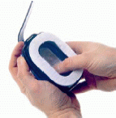

Zum mehrfachen Gebrauch bestimmte Gehörschützer müssen regelmäßig gewartet und gereinigt werden, um Hautreizungen und andere Ohrprobleme zu vermeiden. Es sollten die Reinigungsvorschriften entsprechend der Benutzerinformation des Herstellers genau befolgt werden. Beschädigte Dichtungskissen dürfen nicht weiter verwendet werden.
Gehörschutzstöpsel sollen nicht mit verschmutzten Fingern eingesetzt werden.
An Schmutzarbeitsplätzen empfiehlt sich daher der Einsatz von Gehörschutzstöpseln zur einmaligen Verwendung.
An staubigen Arbeitsplätzen kann sich zwischen den Dichtungskissen eines Kapselgehörschützers und der Haut eine Schmutzlage bilden, die zu Hautreizungen führen kann (Hinweis: Zwischenlage für Kapselgehörschutz verwenden).

Abb. 15: Zwischenlage auf einer Gehörschutzkapsel
Hier ist von Kapselgehörschützern abzuraten, geeignet sind Gehörschutzstöpsel.
Bei Neigung zu Gehörgangsentzündungen sind Kapselgehörschützer zu empfehlen (bei Problemen den Betriebsarzt fragen). Verschmutzte Absorptionseinlagen sind auszutauschen (siehe Angaben des Herstellers).